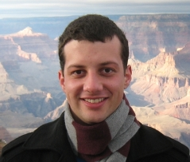
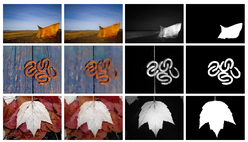
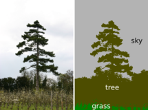
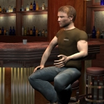

| Philipp Krähenbühl |  |
|---|---|
| 353 Serra Mall | |
| Room 286 | |
| Stanford CA 94305-9025 | |
| email: philkr(at)stanford.edu | |
| curriculum vitae |
I am a Ph.D. candidate in the Department of Computer Science at Stanford University. I am working with Vladlen Koltun and the Stanford Virtual Worlds Group. My research interests are computer graphics and lately computer vision and machine learning.
Previous research:
|
Philipp Krähenbühl and Vladlen Koltun Efficient Nonlocal regularization for Optical Flow ECCV 2012 [PDF][Supplementary material] Dense optical flow estimation in images is a challenging problem because the algorithm must coordinate the estimated motion across large regions in the image, while avoiding inappropriate smoothing over motion boundaries. Recent works have advocated for the use of nonlocal regularization to model long-range correlations in the flow. However, incorporating nonlocal regularization into an energy optimization framework is challenging due to the large number of pairwise penalty terms. Existing techniques either substitute intermediate filtering of the flow field for direct optimization of the nonlocal objective, or suffer substantial performance penalties when the range of the regularizer increases. In this paper, we describe an optimization algorithm that efficiently handles a general type of nonlocal regularization objectives for optical flow estimation. The computational complexity of the algorithm is independent of the range of the regularizer. We show that nonlocal regularization improves estimation accuracy at longer ranges than previously reported, and is complementary to intermediate filtering of the flow field. Our algorithm is simple and is compatible with many optical flow models. |
|
|  |
Federico Perazzi, Philipp Krähenbühl, Yael Pritch and Alexander Hornung Saliency Filters: Contrast Based Filtering for Salient Region Detection CVPR 2012 [PDF] [Project Page] [Code] Saliency estimation has become a valuable tool in image processing. Yet, existing approaches exhibit considerable variation in methodology, and it is often difficult to attribute improvements in result quality to specific algorithm properties. In this paper we reconsider some of the design choices of previous methods and propose a conceptually clear and intuitive algorithm for contrast-based saliency estimation. Our algorithm consists of four basic steps. First, our method decomposes a given image into compact, perceptually homogeneous elements that abstract unnecessary detail. Based on this abstraction we compute two measures of contrast that rate the uniqueness and the spatial distribution of these elements. From the element contrast we then derive a saliency measure that produces a pixel-accurate saliency map which uniformly covers the objects of interest and consistently separates fore- and background. We show that the complete contrast and saliency estimation can be formulated in a unified way using high- dimensional Gaussian filters. This contributes to the conceptual simplicity of our method and lends itself to a highly efficient implementation with linear complexity. In a detailed experimental evaluation we analyze the contribution of each individual feature and show that our method outperforms all state-of-the-art approaches. |
|  |
Philipp Krähenbühl and Vladlen Koltun Efficient Inference in Fully Connected CRFs with Gaussian Edge Potentials NIPS 2011 (oral, best student paper) [PDF] [Project Page with code] Most state-of-the-art techniques for multi-class image segmentation and labeling use conditional random fields defined over pixels or image regions. While region-level models often feature dense pairwise connectivity, pixel-level models are considerably larger and have only permitted sparse graph structures. In this paper, we consider fully connected CRF models defined on the complete set of pixels in an image. The resulting graphs have billions of edges, making traditional inference algorithms impractical. Our main contribution is a highly efficient approximate inference algorithm for fully connected CRF models in which the pairwise edge potentials are defined by linear combinations of Gaussian kernels. Our algorithm can approximately minimize fully connected models on tens of thousands of variables in a fraction of a second. Quantitative and qualitative results on the MSRC-21 and PASCAL VOC 2010 datasets demonstrate that full pairwise connectivity at the pixel level produces significantly more accurate segmentations and pixel-level label assignments. |
|  |
Sergey Levine, Philipp Krähenbühl, Sebastian Thrun, Vladlen Koltun Gesture Controllers. Proceedings of ACM SIGGRAPH 2010 (Los Angeles, July 25-29, 2010), ACM Transactions on Graphics [PDF] [Video] Gesture controllers learn optimal policies to generate smooth, compelling gesture animations from speech and other optional inputs. The accompanying video presents examples of various controllers, including controllers that recognize key words, admit manual manipulation of gesture style, and even animate a character with a non-humanoid morphology. |
|
Philipp Krähenbühl, Manuel Lang, Alexander Hornung and Markus Gross Retargeting of Streaming Video Proceedings of ACM SIGGRAPH Asia (Yokohama, Japan, December 16-19, 2009), ACM Transactions on Graphics [PDF] [Video] We present a novel, integrated system for content-aware video retargeting. A simple and interactive framework combines key frame based constraint editing with numerous automatic algorithms for video analysis. This combination gives content producers high level control of the retargeting process. The central component of our framework is a non-uniform, pixel-accurate warp to the target resolution which considers automatic as well as interactively defined features. Automatic features comprise video saliency, edge preservation at the pixel resolution, and scene cut detection to enforce bilateral temporal coherence. Additional high level constraints can be added by the producer to guarantee a consistent scene composition across arbitrary output formats. For high quality video display we adopted a 2D version of EWA splatting eliminating aliasing artifacts known from previous work. Our method seamlessly integrates into postproduction and computes the reformatting in realtime. This allows us to retarget annotated video streams at a high quality to arbitary aspect ratios while retaining the intended cinematographic scene composition. For evaluation we conducted a user study which revealed a strong viewer preference for our method. |
|
|
Philipp Krähenbühl, Manuel Lang and Markus Gross Art Directable Retargeting for Streaming Video Bachelor Thesis, ETH Zurich, February 2009 [PDF] We present a novel framework for content-aware and art-directable video retargeting. A simple and interactive workflow combines key frame based constraint editing with numerous automatic algorithms for video analysis. This combination gives content producers high level control of the retargeting process. The central component of our framework is a non-uniform, pixelaccurate warp to the target resolution which considers automatic as well as interactively defined features. Automatic features comprise video saliency, edge preservation at the pixel resolution, and a scene cut detection to enforce bilateral temporal coherence. Additional high level constraints concerning scene composition can be added by the producer. For high quality video display we adopted a 2D version of EWA splatting eliminating aliasing artifacts known from previous methods. Our method seamlessly integrates into postproduction and computes the reformatting in realtime. This allows us to retarget annotated video streams to arbitary devices while retaining the intended cinematographic scene composition. |
I'm well aware that my last name is not the easiest one to write or cite (and I saw it butchered a bunch of times over the years). So to make things easier just pick your document type below and copy the string:
If all the above fail, just use "Kraehenbuehl".
{kind=link}
{kind=link}
{kind=link}
{kind=link}
{kind=link}